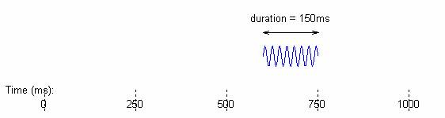

Suppose you have a 25-Hz tone with the duration of half second.
Then you have another tone, octave higher, with the duration of 250 ms, but it starts 100 ms after the first tone ends.
The first one is

In AUX this is
tone(25,500)
meaning that it is 25 Hz with the duration of 500 ms.
The second tone is
In AUX this is
tone(25,500) >> 600
meaning that it is 50 Hz with the duration of 250 ms and it starts at 600 ms.
">>" is the "time-shift" operator, indicating that the signal starts at the specified time point.
So if you need to "add" these two sounds, just add them like this:
tone(25,500) + tone(25,500) >> 600
There the "+" operation in AUX indicates an addition of conceptual elements of sound units, rather than a vector/matrix operation in MATLAB. If you are a MATLAB user, this might sound weird, but remember—this relieves the users of the burden of vector preparation for representing a combinations of sound units. If you are not, just enjoy the AUX scripting at a conceptual level of sound design/representation/processing.
If the two tones overlap in time, still no worry. Just put them together however way you want to arrange them temporally, for example:
tone(25,500) + tone(25,500) >> 250
What should this be? Think about it and click here when you are ready.
{kind=link}